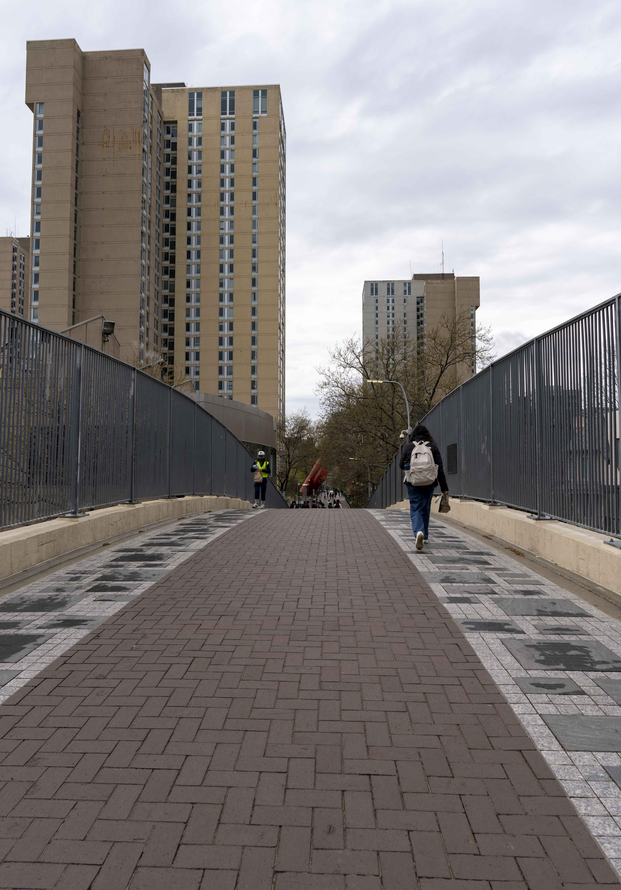
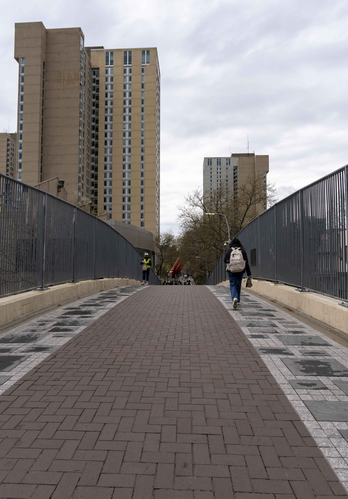

相比起费城的博物馆，宾大更单纯地打卡行了，浮光掠影地看一看，拍拍照，没有深入去了解它。我感兴趣的打卡点就几个，fisher艺术馆，宾大艺术博物馆，沃顿商学院。整体的感受是，学生很有朝气，多元、蓬勃，混入大礼堂里面看到准备活动的人有很多，路上的弟弟妹妹着衣讲究、打扮精致。
本来没打算单开一个博客的，但是一则小事直接让对宾大颇为无感的我瞬间感受到宾大的人文关怀。斜挎着相机、头戴鸭舌帽，肩背双肩包，一副妥妥的学生旅游的打扮的我，在咖啡店前给服务员小黑哥开了门并且礼让，然后正好是小哥帮我做饮料。还算是利落地点完饮品后，付款却两三次失败，看向小哥，小哥拍拍胸脯，我还以为要把信用卡给他，结果他意思是这杯他请。好家伙，可真chill啊，无论是回报之前的好意还是对游客的善意，都颇为感激。一时间忽然感觉长这么大第一次感觉礼貌是有回报的，还是要be nice啊。

fisher 艺术馆


本杰明 富兰克林


雨后花苞


沃顿商学院

 



沿途红色和绿色的樱花